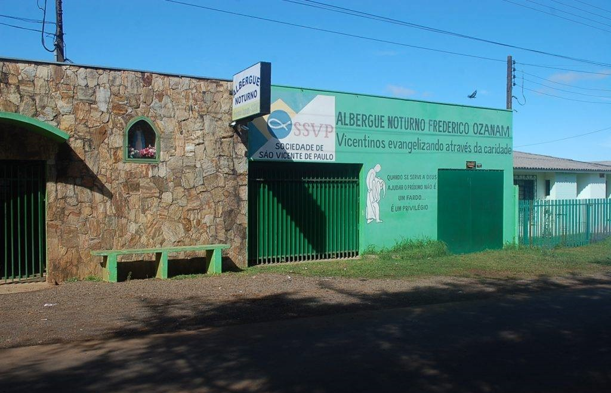

Albergue Noturno Frederico Ozanam
O Albergue Noturno Frederico Ozanam é uma instituição que atua em Guarapuava há mais de 30 anos acolhendo pessoas em situação de rua.
Durante a permanência no albergue os abrigados recebem os mais variados cuidado, que vão desde a educação social até o encaminhamento para o mercado de trabalho. Na instituição eles também recebem atendimento de uma equipe capacitada no setor de serviço social e psicologia.